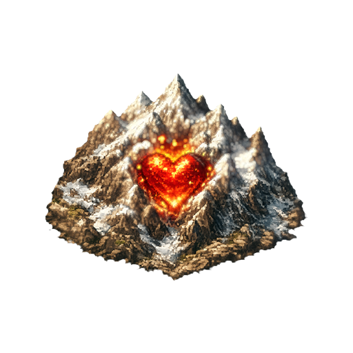
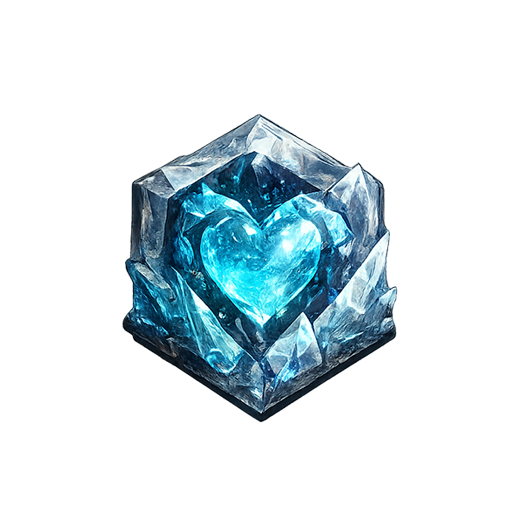

Sota Vuoresta
Board Game — Rulebook
Everything you need to play — board, scoring, rounds, challenges and all 15 spells.
1. How It Works
Sota Vuoresta puts a strategy board game on top of a LAN esports tournament. You and your team play real matches in real video games. Winning a match doesn't just put a number on a scoreboard — it earns you the right to place a tile on a shared hex board carved out of the Mountain. Territory on that board generates points every round, and it is territory, not raw wins, that decides the tournament.
- Your team plays a match in a video game (CS2, Call of Duty, StarCraft II…).
- Win it, and you earn +1 point and one tile to place.
- Place that tile to claim territory — ideally a heart hex or a room.
- Every heart hex you hold pays you points every round, whether you win or not.
That last line is the whole game. A team that wins every match but never takes a heart will lose to a team that wins half as often and sits on the Mountain Heart. Match wins are worth one point each; holding every heart is worth sixteen points a round, forever.
Winning
The first team to reach the point target wins the tournament.
The target defaults to 50 points, but it is a per-tournament setting the organiser chooses during setup and can adjust live — anywhere from 1 to 500. The current target is always shown in the interface, so check it rather than assuming 50. A short evening might run to 25; a full weekend might run to 80.
Teams & Colours
The system supports any number of teams of any size, but the whole event — especially the automatic match balancing — is built and tuned for 5 teams of 2 players, 10 players total. That is the standard setup and what everything below assumes.
Every team gets a distinct colour, used consistently for its tiles on the board, its row in the standings, and its name everywhere in the interface:
| Team | Colour | Hex |
|---|---|---|
| Team 1 | Red | #de392c |
| Team 2 | Blue | #2278a3 |
| Team 3 | Green | #2e9158 |
| Team 4 | Yellow | #f7ba32 |
| Team 5 | Black | #22241d |
A sixth team and beyond cycles back through the same palette; the organiser can override any team's colour manually.
2. The Board
The board is a 91-hex honeycomb: a hexagon five rings deep in every
direction from the centre. Every hex is addressed by two axial coordinates,
q and r, written together as q2r-4.
Hex Types
| Type | Count | What It Does |
|---|---|---|
 Mountain Heart |
1 | +2 points every round to whoever holds it |
 Side Hearts |
6 | +1 point every round each, to whoever holds it |
| Starting Locations | 6 | Your first tile must go on one of these |
| Rooms | varies | Draw 1 spell card when you place a tile here |
| Normal Hexes | the rest | No effect — but they connect your territory |
Mountain Heart (Vuorisydän)
The dead centre of the board, q0r0. It pays +2 points every
round — twice any other hex on the board — and everyone can reach it from
every direction, so it changes hands more than anything else. Expect to fight for
it repeatedly rather than take it once.
Side Hearts (Sivusydämet)
Six hearts at q-4r2, q-2r-2, q2r-4,
q4r-2, q2r2 and q-2r4. Each pays
+1 point every round.
Note where these actually sit: they form a wide ring four steps out from the centre, not a tight ring hugging the Mountain Heart. They are much closer to the starting locations than to the middle. In practice this means the side hearts are the early game — reachable within a few placements from your corner — while the Mountain Heart is the late game.
Rooms (Huoneet)
Rooms are how you get spell cards after the opening hand. Placing a tile on a room draws you one card. There is no fixed number of rooms and no fixed layout: the organiser marks them out on the board during tournament setup, so their count and position change from event to event. Check the live board before planning a route. Rooms can never sit on top of a heart hex.
Coordinate System
A hex is valid when all three of these hold:
-5 ≤ q ≤ 5-5 ≤ r ≤ 5-5 ≤ q + r ≤ 5
Every hex has six neighbours, reached by adding
(+1,0) (+1,-1) (0,-1) (-1,0) (-1,+1) (0,+1) to its coordinates.
"Adjacent" throughout this rulebook means exactly these six.
Side Hearts q-4r2, q-2r-2, q2r-4, q4r-2, q2r2, q-2r4
Starting Locations q0r-5, q5r-5, q5r0, q0r5, q-5r5, q-5r0
You never have to type a coordinate. You claim hexes by clicking them on the board. The coordinates are here so you can talk to your teammate about a specific hex without pointing at a screen.
3. Playing Matches
Matches are played in ordinary video games, outside this system. The system schedules them, tracks who is ready, and records the result — the organiser confirms who won, and everything else follows from that.
The Two Slots
Each round runs two matches, called Match 1 and Match 2. They are deliberately built so that no player appears in both, which means they run independently and in parallel — Match 2 can still be in setup while Match 1 is already being played, and vice versa.
Each slot walks its own four stages:
| Stage | What's Happening |
|---|---|
| Setup | The match is being created — game, format and players chosen. |
| Lobby | Everyone in the match readies up. See below. |
| Playing | The match is live in the game. Go play. |
| Done | Result confirmed, points and tile rights awarded. |
The round only moves on once both slots reach Done. If your match finished first, the round is waiting on the other one — this is the moment to plan your next placement or read your spell hand, not to wander off.
Readying Up
Before a match can start, every player in it must mark two separate ready flags:
- Game lobby ready — you are actually in the game's lobby, in the right party, on the right side.
- Discord ready — you are in the correct Discord voice channel for your side.
Both. One is not enough. The moment the last player sets both flags, the slot advances to Playing on its own — nobody has to chase you, but nobody can start without you either. If a match seems stuck, it is nearly always one person missing one of these two flags.
Games & Formats
Sixteen games are built into the system. Five are on by default — those are the ones to actually practise before the event. The rest are available for the organiser to switch on for a given tournament.
| Game | Format | Genre | Status |
|---|---|---|---|
| Call of Duty | 5v5 | FPS | Default |
| Counter-Strike 2 | 5v5 | FPS | Default |
| Predecessor | 5v5 | MOBA | Default |
| Age of Empires IV | 3v3 + 2v2 | RTS | Default |
| StarCraft II | 3v3 + 2v2 | RTS | Default |
| Overwatch 2 | 5v5 | FPS | Optional |
| Valorant | 5v5 | FPS | Optional |
| Space Marine 2 | 5v5 | Action | Optional |
| Spellbreak | 5v5 | Battle Royale | Optional |
| Dota 2 | 5v5 | MOBA | Optional |
| Warcraft 3 | 3v3 + 2v2 | RTS | Optional |
| Dawn of War 2 | 3v3 + 2v2 | RTS | Optional |
| Rocket League | 3v3 | Sports | Optional |
| Hearthstone | 1v1 | Card | Optional |
| Tekken 8 | 1v1 | Fighting | Optional |
| Beer Drinking | Free-for-all | …sport | Optional |
3v3 + 2v2 means the ten players split into a 3v3 game and a separate 2v2 game running alongside it. Both are played, and both count.
The organiser sets the game list per tournament, so the five defaults above are a starting point rather than a guarantee. Whatever the app shows for your tournament is the authority.
Split Teams — Read This One Carefully
Because most formats need five players a side and teams are only two, you will regularly be placed alongside members of other teams — and sometimes your own teammate is put on the opposite side. That is a split.
A team only earns the win, the point and the tile if it has two or more players on the winning side. If your team is split across both sides, it gets no point, no tile, and no win — and equally, no loss on its record. The match simply does not count for you either way.
So a split round is a round where you cannot gain — but also cannot fall behind on record. Your heart income still pays out normally. Splits are distributed deliberately by the scheduler so every team eats roughly the same number.
4. Scoring
Your team has exactly one number that matters: its points. It is what the standings sort by, and what the victory condition checks. Points come from two sources and nothing else.
Match Wins: +1
Winning a match is worth +1 point, awarded the moment the organiser confirms the result. It also adds a win to your record and earns you a tile to place.
Two conditions gate it:
- You need 2+ players on the winning side (see Split Teams).
- It must be a regular match. Challenge matches award no points at all.
Losing costs you nothing directly. There are no negative points for a loss — you just don't gain, and you don't get a tile.
Heart Income: +1 / +2 Per Match Held
Every heart hex pays for every match it was in your hands for: a Side Heart is +1 and the Mountain Heart +2 for each of the round's matches you held it through. Hold a Side Heart through a normal two-match round and it pays +2; take it midway through the round and it pays only for the matches after the capture. This is passive: you get it for holding the hex, regardless of whether you played, won, or lost those matches.
| Heart | Income |
|---|---|
| Side Heart (six of them) | +1 per match held through, each — +2 in a normal two-match round |
| Mountain Heart | +2 per match held through — +4 in a normal two-match round |
Holding every heart through a normal two-match round pays +16 points
(6 side hearts × 1) + (1 Mountain Heart × 2) = 8 per match, × 2 matches
One payment, counted per match — the money arrives once, at the round's scoring phase, but its size is decided match by match: for each of the round's matches, every heart pays whoever held it when that match's result went in. Capture a heart between the two matches and you earn for the second one only; lose one mid-round and the team that took it earns for the matches after the takeover. If a match is split into several smaller games, they still count as one match — a round has two matches for heart income no matter how many games it took to play them.
Challenge games are not matches. They move hex control, never the scoreboard. Holding a heart through seven challenge games earns nothing — only the round's real matches count, and a round of nothing but challenge games counts as a round in which no match was played (see below).
Three exceptions worth knowing before they surprise you:
Income is paid for a completed round. At the start of round 1 nothing has been played yet, so no hearts pay out. Your first heart income arrives in round 2.
If a heart hex is the subject of a challenge match that hasn't been resolved yet, it pays nobody that round — not the current holder, not the challenger. The income is withheld until the dispute is settled. Challenging a heart therefore costs the defender points even if you go on to lose the challenge.
Hearts pay in every round that was actually played. If a round's matches are all cancelled or force-skipped, no heart pays anything that round. This only happens when the organiser deliberately advances past a match — their screen warns them when it does. If you played a match that never got its result entered, say so before the round advances.
What Scores Nothing
These all feel like they should be worth points. None of them are:
| Action | Why It's Worth Zero |
|---|---|
| Placing a tile | The tile is the reward for the win, not a scoring event. It's worth what it lets you reach — a heart, a room, or a path to one. |
| Owning normal hexes | Territory size is not scored. Only heart hexes generate income. A sprawling empire of normal hexes pays exactly nothing. |
| Winning a challenge match | It transfers control of the heart — and therefore all its future income — but awards no points directly, and doesn't touch your win/loss record. |
| Being split across a match | No point, no tile, no win, no loss. |
5. Placing Tiles
Winning a regular match earns your team one tile. Placing it is how you turn a match win into board position.
Placement Rules
If your team has no tiles on the board yet, your first tile must go on a free starting location — any of the six, whichever is still unclaimed. They are not pre-assigned to teams, so which corner you get depends on when you win and what's left. Winning early means picking your corner.
Every Tile After That
- It must be adjacent to a tile your team already owns. Your territory grows outward one step at a time; it can never jump.
- It cannot go on a hex that is already occupied — by anyone, including you.
That adjacency rule is the core constraint of the whole board game. From your corner, every heart is a fixed number of placements away, and every placement is a match win. Count the steps before you commit to a direction — the side hearts are reachable in a handful of wins, the Mountain Heart takes most of the tournament.
Placement Effects
| Place On | Effect |
|---|---|
| Room | Draw 1 spell card |
| Unclaimed Side Heart | Take control + draw 1 spell card — it starts paying +1/round |
| Unclaimed Mountain Heart | Take control — it starts paying +2/round |
| Adjacent to a heart someone else holds | Lets you open a challenge for it (see §7) |
| Normal hex | Nothing directly — but it's a step toward something that isn't nothing |
When You Actually Place
You do not place your tile the instant you win. Matches are played at the end of a round; the placement phases sit near the start of the following one. So a match you win in round 3 becomes a tile you place in round 4.
There are two placement phases per round, and they mirror the two match slots: Hex Placement — Game 1 resolves everything earned in the previous round's Match 1, and Hex Placement — Game 2 resolves Match 2. Between them sits a spell window, which means a placement made in the first phase can be reacted to with a spell before the second phase happens.
The practical consequence: you have a full round to think about your placement. When you win, don't guess — look at the board, count steps to the nearest unclaimed heart, check where the rooms are, and decide before the placement phase comes round. The round cannot advance past a placement phase while a team still owes a tile, so taking a moment costs nobody anything; dithering for ten minutes while nine people wait does.
6. The Round
The tournament runs in rounds, and every round walks the same fixed sequence of phases. You don't need to memorise the names — the interface always tells you where you are and what it's waiting for — but knowing the shape tells you when you can act and when you're waiting.
- Scoring: Victory Points Last round's match wins are tallied. From round 2 onward this opens with an animated recap of the previous round — wins, placements, heart income, spells cast — shown on the spectator screen.
- Scoring: Hex Heart income is paid out — +2 per Mountain Heart and +1 per Side Heart for each of last round's matches the heart was held through. This is the one moment per round your hearts pay, and it settles the round that just ended. Contested hearts pay nobody; in round 1 nothing pays at all, and neither does a round in which no match was played.
- Hex Placement — Game 1 Teams that won last round's Match 1 place their tiles. The round cannot move on until every owed tile is down.
- Spell Window 1 First chance to cast. Optional — if nobody has cards, it's skipped.
- Hex Placement — Game 2 Teams that won last round's Match 2 place their tiles.
- Challenges Issued Any heart disputes created by the new placements are set up as challenge matches.
- Spell Window 2 Cast before the challenges are played — this is where pre-game spells aimed at a challenge belong.
- Challenge Game ⟲ The challenge matches are played and confirmed. Up to 7 challenge games can run in a single round.
- Spell Window 3 React to the challenge results. Can loop back to another Challenge Game if more disputes remain.
- Board Resolved The board is checked and agreed. What's on screen now is the truth — speak up here if something looks wrong, not later.
- Spell Window 4 Last window before the round's own matches. Can loop back to Challenges if the board changed again.
- Matches In Progress Match 1 and Match 2 run in parallel, each through setup → lobby → playing → done. The round waits for both. A break may be inserted automatically before this phase.
- Round Advance Automatic. State is backed up, the round counter ticks, and it all starts again from the top.
Two things fall outside this sequence entirely: a Break can be called at any point and pauses everything, and Tournament End fires the moment a team reaches the point target.
- Phases 1–2: watch the recap, check the standings moved the way you expected.
- Phases 3, 5: place your tiles — decided in advance, ideally.
- Phases 4, 7, 9, 11: your four chances to cast a spell this round.
- Phase 10: your last chance to dispute the board state.
- Phase 12: ready up in both the game lobby and Discord, then play.
7. Heart Challenges
Hearts don't have to be taken from an empty board. If another team already holds one, you can take it off them — but only by beating them for it.
Place a tile adjacent to a heart hex another team controls. That puts the heart in dispute, and a challenge match is set up during the round's Challenges phase.
The Rules
- A dedicated match: challenger and defender are matched directly against each other, outside the round's two normal slots.
- The challenger picks the game.
- Sides can be doubled up: a challenge supports up to two teams per side, so several disputes over the same heart can resolve in one match.
- Up to 7 challenge games per round.
| Result | Outcome |
|---|---|
| Challenger wins | Control of the heart transfers to the challenger |
| Defender wins | The defender keeps it |
A challenge match awards no victory point, no tile, and doesn't touch anyone's win/loss record. You are playing purely for the hex. What makes it worth playing is the income: the Mountain Heart is +4 every remaining two-match round, which over a long tournament dwarfs any single match win.
While a heart is under challenge, it pays nobody for that round. Simply opening a dispute denies the holder their income — so a challenge you expect to lose can still be worth issuing to stall a leader, and a defender has real reason to want it resolved fast.
Heart income is paid once per round, sized by the round's real matches — challenge games never change it. Seven challenge games in a round does not mean seven payouts, or a bigger one. They move the hex; only matches make the hex pay.
8. Spell Cards
Spells are the game's chaos. There are 15, and they do things the board rules otherwise forbid: destroy enemy tiles, double your rewards, place tiles out of nowhere, challenge the Mountain Heart from across the map, or simply forbid an opponent from speaking during their match.
Hands & Draw Piles
Each team has its own private card economy:
- Every team gets its own shuffled draw pile containing all 15 spells — you are not competing with other teams for copies, and two teams can hold the same card at once.
- You open the tournament with a hand of 3, drawn at random from that pile.
- You draw more by placing tiles on room hexes (1 card each).
- Cast cards go to a used pile. When your draw pile runs out, the used pile is reshuffled back in — you can never run permanently dry.
Your hand is private to your team and visible on your team page. Cast spells are public once played.
Spell Windows & Turn Order
You cannot cast whenever you like. Spells are cast during the round's four spell windows (see §6), which sit at deliberately chosen moments: after the first placement, before the challenge games, after them, and before the round's own matches.
Each team may cast at most one spell per turn. Four windows a round means up to four across a full round — but every window is a decision, not an obligation. Passing is normal.
Within a spell window, teams take their turns in reverse standings order — the team with the fewest points goes first, the leader goes last. This is a deliberate catch-up mechanic: if you're behind, you get to commit first and force the leader to respond. If you're ahead, you get to see everything coming and answer it.
A window with a card in it and nobody holding cards is skipped automatically.
All 15 Spells
Card text below matches the definitions the system actually uses. Where a card's original wording named a specific race, it's written here as "your team" — the effect is identical.
Pre-Game — cast before a match begins
If your team finishes first or second in the winning side's final results of the next match, you receive double victory points and double tiles from it.
Cast: before the match starts. Best on a game where individual placement is clearly ranked, and when you're confident of the win.
If your side wins the next match, every opponent tile touching one of your tiles is destroyed afterwards.
Cast: before the match starts. Devastating when enemies have crowded up against your border — check the board first and count what it would actually remove.
If your team is on the winning side of three matches in a row after this card is cast, you gain +2 extra tiles and +2 extra points.
Cast: before a match, when you believe a streak is starting. A loss breaks it — you'd have to cast it again.
Choose one opponent team and ban one playable thing from them for the next match — a weapon, a class, a hero, an item, a strategy.
Cast: before an opponent's important match. Aim at a one-trick — the ban only hurts if they had no plan B.
Choose one player on any team. For the whole of the next match they cannot use a microphone or speak at all.
Cast: before the match. Target the shotcaller, not the best mechanical player. Counterplay: agree on hand signals or text callouts with your teammate in advance.
Before the match, fill in a betting slip with three predictions: which side wins, who does the most damage/kills, and who dies the most. Each correct prediction is worth +1 point and +1 tile. If all three are wrong, two of your tiles are destroyed.
Cast: before the match. The only card that can hand you 3 points and 3 tiles at once — and the only one that punishes you for casting it.
Defensive
All your tiles are protected until the end of the next match and cannot be removed by any effect. Your team also cannot be targeted by negative card effects until the end of the next round.
Cast: after losing a match. The direct answer to Get Away From Me! and Calculated Aggression — hold it if you can see one coming.
Tactical
Choose one card another team has already used and play it immediately as your own — with your own targets. The copied card must be legally playable right now.
Cast: on your turn, any window. Its value is entirely determined by what has been played before it, so it gets better the longer you hold it.
Challenge for the Mountain Heart regardless of where you are on the board. If you win the challenge you gain +2 victory points and may immediately place one tile next to the centre, removing another team's tile there if necessary.
Cast: before a game. The only way to contest the centre without first walking a tile chain to it — this card can skip half a tournament of positioning.
Instant & Placement
Gain +1 victory point for every heart hex you control at that moment — Mountain Heart and side hearts alike.
Cast: immediately after placing a tile. Place onto a heart first, then cast, so the new heart counts. Worth up to +7.
Place one tile. If it ends up adjacent to any opponent tiles, you may remove those tiles from the board.
Cast: with a placement. Look for a hex that touches the most enemy tiles at once — and prefer breaking a chain that connects an opponent to a heart, since a severed chain can't be extended.
Place two tiles anywhere on the board, ignoring the adjacency rule. Restriction: neither tile may be next to a heart hex, and neither may be next to another team's tile.
Cast: during a placement phase. Use it to found a second front in open board space — the restriction means it can't take a heart directly, but it can start a chain that will.
Permanent, Modifier & Counter
For the rest of the tournament, every new heart you capture — Mountain Heart or side heart — immediately gives +1 victory point. The effect never expires.
Cast: as early as possible. Its value is entirely a function of how many hearts you have left to take, so a card cast in round 2 is worth several times the same card cast in round 12.
The next time you place a tile on a room hex, you draw two cards instead of one. It waits in effect until it is used.
Cast: before you make a run at a room. It doesn't expire while unused, so casting it early is close to free.
Stays in your hand until used. When another team draws a card, you may read it and then cancel the draw — the card goes straight to the used pile and is never played.
Cast: reactively. You see the card before deciding, so there is no guesswork — let harmless draws through and cancel only what would hurt you.
Strategy
- Early: Victory Strike (its value only decays), Double Bid (free if unused), Knowledge from the Deep (a second front early is worth more than late).
- Mid: Mountain Purification (cash in the hearts you've accumulated), Calculated Aggression (cut a rival's chain before it reaches a heart), Complete the Contract (contest the centre without the walk).
- Late: Double-sided Glow (multiply what's left), Get Away From Me! (clear a path when the board is crowded), Elf Protection (defend a lead).
- The combo: capture a heart while Victory Strike is active (+1), then cast Mountain Purification the same placement (+1 per heart held, including the new one).
- Read the order: in a spell window the leader acts last and sees everything first. If you're leading, hold your counter. If you're behind, your first-mover advantage is the only edge the system hands you — use it.
- Against Echo of Silence: agree hand signals or a text-callout habit with your teammate before it's ever cast on you.
9. Your Pages
| Page | What It's For |
|---|---|
| Home | Your landing page — current standings, your next match, and links to everything else. |
| My Team | The page you'll live in. Your spell hand, your match details, your ready-up buttons, your team's board position. |
| Spectator | The live board, built for the big screen. Also the best way to study the map before deciding a placement. |
| Statistics | Win rates, per-player numbers, and how the standings moved over time. |
| Match Queue | A display screen of upcoming matches — check here for what you're playing next. |
| Onboarding | Your personal pre-event checklist: add everyone on each gaming platform, test-launch each game, enter your platform IDs. Doing this before the event is the single biggest thing you can do to keep the tournament running on time. |
| Profile | Your account, avatar, and platform IDs. |
There's also a chat widget on the tournament pages, with two rooms: one for the whole tournament and one private to your team. Use the team room to plan placements and spells without tipping anyone off.
Everything is live. The board, the standings and the phase indicator update on every device at once, so you never need to refresh, and what your teammate sees on their laptop is exactly what's on the big screen.
10. Edge Cases & FAQ
Rules Questions
Can we cast more than one spell in a round?
One per turn, and there are four windows in a round — so yes, up to four across a full
round, but never two in the same window.
Can we trade spell cards with another team?
Not by default. The organiser can allow it for a given event if they want to.
Do spell effects survive into the next round?
Depends on the card. Permanent buffs, counters and streak bonuses never expire. Shields
last until the end of the next round. Modifiers wait until they're used. Everything
else resolves within its own round.
What if a spell's effect is ambiguous in a specific situation?
The organiser makes the final call, and it stands. Ask before you cast if it matters.
What if someone breaks a debuff — talks while silenced, uses a banned weapon?
The organiser decides the consequence, up to and including a points deduction.
Our team was split and we won — why did we get nothing?
Because a split team needs 2+ players on the winning side. With one on each side, the
match doesn't count for your team in either direction. See
§3.
Why didn't our hearts pay out this round?
Four possibilities: it's round 1 (no income is paid at all), the heart is under an
unresolved challenge (frozen), it changed hands before the scoring phase, or the
round contained no completed matches (hearts only pay for rounds that were played).
We held one Side Heart all round and got 2 points. Is that right?
Yes. A heart pays for each of the round's matches you held it through — a Side
Heart is +1 per match, and a normal round has two matches. If you'd captured it
between the matches you'd have gotten 1. Challenge games never add to it.
We won a challenge but our score didn't move.
Correct. Challenges transfer the hex, not points. The reward arrives as income in every
subsequent round.
Mistakes & Corrections
The organiser has a full undo/redo system, and every action is logged with a timestamp. It exists for genuine errors — a misclicked hex, a result entered on the wrong side — not for strategic takebacks after you've seen what happened next.
If something looks wrong, say so at the Board Resolved phase, which exists precisely for this. Once the round's matches have started, unwinding gets expensive for everyone.
Disconnections & Interruptions
If someone drops mid-match, the host game's own rules apply — remake, pause, play on, whatever that game normally does. Tournament state lives on the server, so nothing is lost by closing a tab, refreshing, or a laptop dying. The organiser can call a break at any time, and one may also be scheduled automatically between rounds.
Something's Broken
- The match won't start. Someone is missing a ready flag. Remember it's two — game lobby and Discord.
- My spell hand is empty. You've cast everything. Land on a room hex to draw more.
- The board looks out of date. It shouldn't — updates are live. If a refresh doesn't fix it, tell the organiser rather than working around it.
- I can't see my team page. You may not be assigned to a team yet. Ask the organiser to link your account.
11. Quick Reference
Key Numbers
| Stat | Value |
|---|---|
| Points to win | 50 by default (organiser sets 1–500) |
| Match win (2+ players on winning side) | +1 point + 1 tile |
| Mountain Heart income | +2 per match held through (+4 in a normal round) |
| Side Heart income (each) | +1 per match held through (+2 in a normal round) |
| Maximum heart income | +16 in a normal round (all seven hearts, both matches) |
| Heart income in round 1 | none |
| Spells per turn | 1 |
| Spell windows per round | 4 |
| Spell turn order | reverse standings |
| Starting hand | 3 cards |
| Total spells | 15 (each team has all 15 in its own pile) |
| Matches per round | 2 (parallel slots) |
| Max challenge games per round | 7 |
| Board | 91 hexes |
| Hearts | 1 Mountain + 6 side |
| Starting locations | 6 (first-come, not assigned) |
| Rooms | varies — set per tournament |
Placement Quick Guide
| Place On | Effect |
|---|---|
| Room | Draw 1 spell |
| Unclaimed side heart | Take control (+1/round) + draw 1 spell |
| Unclaimed Mountain Heart | Take control (+2/round) |
| Adjacent to a held heart | Opens a challenge for it |
| Normal hex | No effect |
| Occupied hex | Not allowed — by anyone, including you |
| First tile ever | Must be a free starting location |
| Any later tile | Must touch a tile you already own |
Hex Types At A Glance
| Hex | Effect |
|---|---|
| Mountain Heart | +2 per match held through |
| Side Heart | +1 per match held through |
| Room | Draw a spell card |
| Starting Location | Where your first tile must go |
| Normal | No effect |
The Round In Brief
2. Score hearts (the one payout per round)
3. Place tiles — Match 1 (earned last round)
4. SPELL WINDOW 1
5. Place tiles — Match 2 (earned last round)
6. Issue challenges
7. SPELL WINDOW 2
8. Play challenge games (up to 7)
9. SPELL WINDOW 3
10. Board resolved (last chance to dispute)
11. SPELL WINDOW 4
12. Play Match 1 & Match 2 (parallel; round waits for both)
13. Round advances → back to 1
If You Remember Only Five Things
- Hearts, not wins. A win is +1 once. A heart is +2 or +4 every round for the rest of the tournament.
- Heart income is paid once per round, sized by that round's matches — normally ×2. Round 1 pays nothing.
- Adjacency is absolute. Every tile must touch one of yours. Count your steps to a heart before you pick a direction.
- Split means nothing scored — no point, no tile, no win, no loss.
- Ready up twice: game lobby and Discord. Both, or the match cannot start.